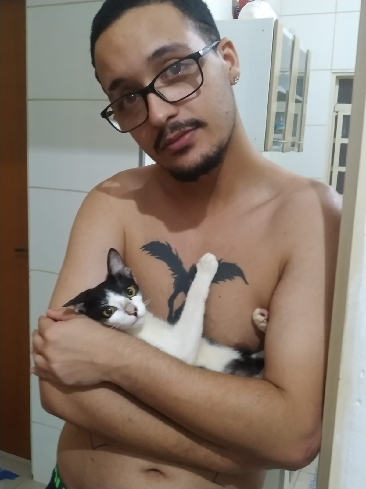
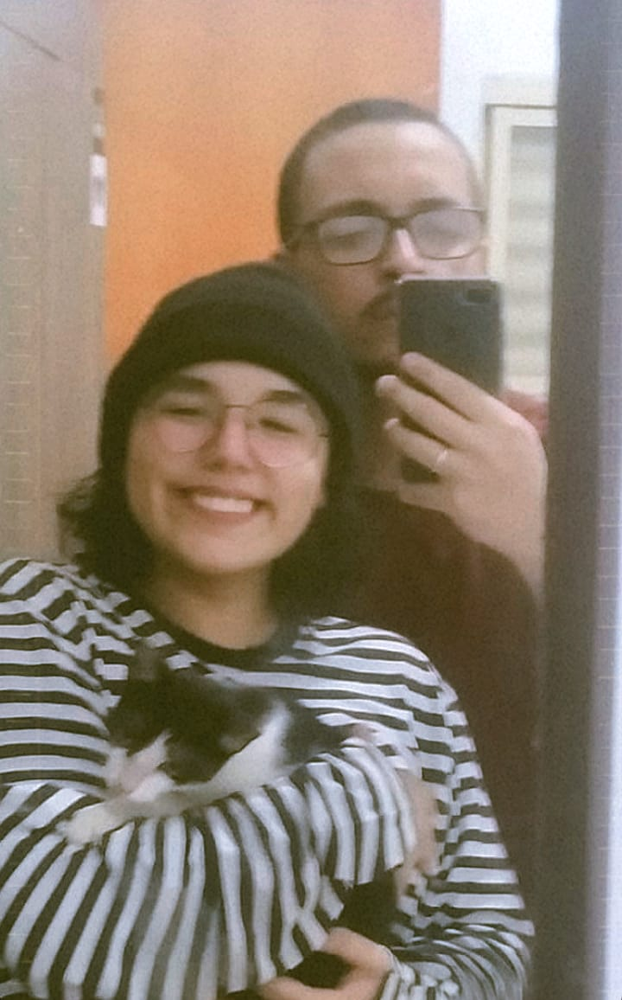
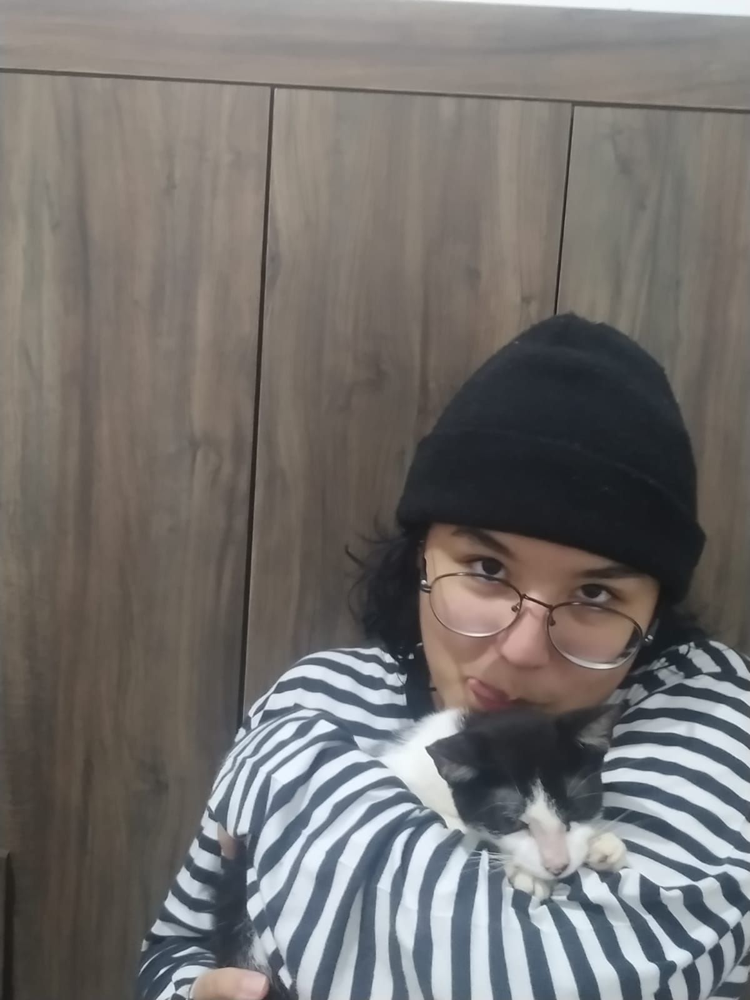
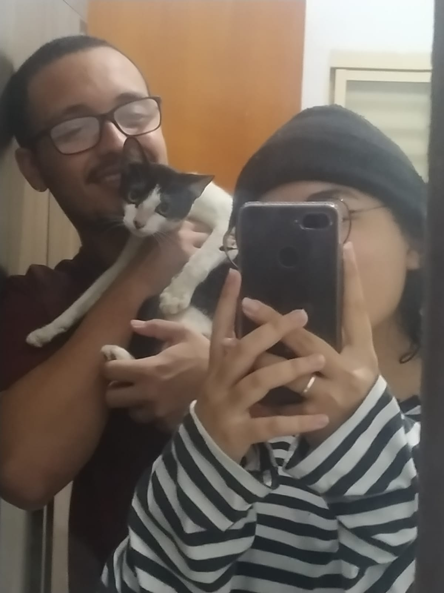

Seja bem-vindo(a) ao nosso cantinho dedicado ao nosso gatinho de estimação! Aqui é onde
compartilhamos as nossas aventuras mais engraçadas e adoráveis com o nosso companheiro felino. É um
lugar onde podemos relembrar todos os momentos especiais que tivemos juntos e guardar essas memórias
para sempre. Compartilhamos nossos segredos, nossas brincadeiras e nossas descobertas, e esperamos
que você se divirta tanto quanto nós ao ler essas histórias. Obrigado(a) por nos acompanhar nessa
jornada, e lembre-se de que nosso amor pelo nosso gatinho é uma das coisas mais preciosas em nossas
vidas. Miau!
Otite

Logo nos primeiros dias, descobrimos que ele tava passando mal, com verme e otite, meu anjo, fiquei
arrasado com o bichinho sofrendo assim. Cê sabe que sou muito pão duro, né? Mas eu faria tudo pelo
nosso gato, gastamos uma grana preta pra deixar ele saudável novamente. E olha só, nosso gato é um
sobrevivente, tá firme e forte graças ao amor e aos cuidados que demos a ele.
Nem tudo cheira bem

Ó, como eu poderia me esquecer de quando vim para minha casa após passarmos o dia juntos e,
ao entrar, deparar-me com o pior cheiro da minha existência (pior que o cheiro nas estradas de
Miguelópolis).
Inicialmente, imaginei que fosse um gás, um componente químico ou qualquer coisa do gênero. Naquela
mesma noite,
fui te acompanhar por conta da sua infecção e você (com sua mãe) sugeriram que eu dormisse na sua
casa, porque - segundo vocês - eu morreria se ficasse em contato com aquele cheiro. Mais tarde
descobrimos que era tudo o xixi do Café, gato filho da p&$@.
"Ele não gosta que pega no colo!"

A senhorita, dona Giovana, adora pegar o senhor Café no colo. O problema é que geralmente ele faz
uma rebelião
dentre teus braços e sempre acaba caindo, gerando automaticamente minha cara fechada que você
conhece tão bem, hehe. Brincadeiras a parte, amo seu jeito amável e meigo com os animais e sei que
gosta muito de expressar isso fisicamente. Além disso, criamos várias piadas internas com o gato,
como "Não tem outro jeito", "Ele só aprende assim", "Se um bandido pular aqui, corre eu e o gato",
"Fih da p(3#", "Ele gosta mais de mim do que de você". Sério, tem sido uma aventura mágica o que nós
3 temos vivido.
Futuro (...)

Meu amor, escrevo isso em 11/04/2023, não sei como as coisas estarão quando estiver lendo isso, mas independente se ficamos
ou não ao lado do Café, quero que saiba que amei nossa experiência de ser papai e mamãe de pet. Infelizmente ele aparenta não gostar muito do pouco espaço daqui de casa, está bem doente e também não tenho muito tempo para ele, mas sei que você foi a melhor mamãe do mundo para esse gato. Essa aventura nos ensinou muitas lições, sou grato a ti por isso. Eu amo você, amo o Café, independente do que possa ocorrer.
Clica aqui ó, minha gata, para continuar vendo!!